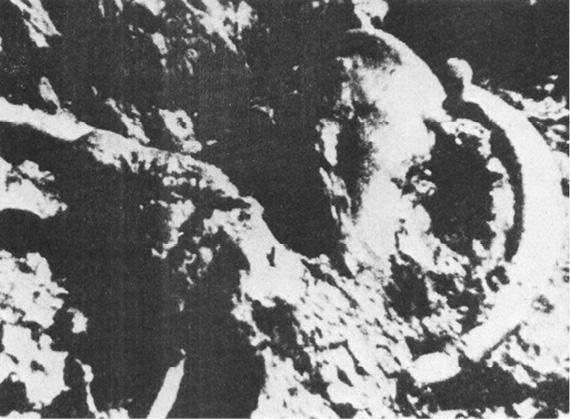

CITÁTY
POSUNOVÁNÍ HRANIC
PROUTEK CÍSAŘE YÜ A DRAČÍ ŽÍLY
MAMUTI MAJÍ STÁLE CO ŘÍCI
HROZBA MAGNETICKÉHO POLE
METEORITY PODIVNÉ, ZNEUZNANÉ A PODNĚTNÉ
OD ZMIZELÝCH LODÍ K JINÝM VESMÍRŮM
Titulní strana
← Předchozí kapitola

Tak vypadají odkryté zbytky mamutů u říčky Berelech
Titulní strana
Následující kapitola →